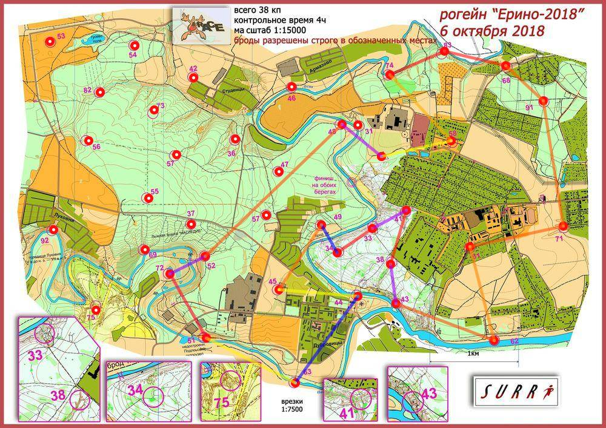

Рогейн Ерино 6.10.18
| Участники | Дуровин Дмитрий
|
| Группа | М4Б |
| Место | 18 |
| Очки | 110 |
| Штраф | 8 |
| Время | 04:03:20 |
| Результат | 102 |
| КП | Время | Сплит | Расстояние, км | Темп, мин/км |
|---|
| С | 12:00:00 | | | |
| 58 | 12:04:41 | 00:04:41 | 0.806 | 5.8 |
| 74 | 12:13:17 | 00:08:36 | 1.017 | 8.5 |
| 83 | 12:22:25 | 00:09:08 | 0.669 | 13.6 |
| 68 | 12:31:18 | 00:08:53 | 0.715 | 12.4 |
| 91 | 12:37:23 | 00:06:05 | 0.572 | 10.6 |
| 71 | 12:52:18 | 00:14:55 | 1.426 | 10.5 |
| 61 | 13:03:48 | 00:11:30 | 1.072 | 10.7 |
| 62 | 13:14:05 | 00:10:17 | 1.082 | 9.5 |
| 43 | 13:27:08 | 00:13:03 | 1.181 | 11.0 |
| 38 | 13:37:04 | 00:09:56 | 0.449 | 22.1 |
| 41 | 13:44:46 | 00:07:42 | 0.62 | 12.4 |
| 33 | 13:53:53 | 00:09:07 | 0.432 | 21.1 |
| 34 | 14:00:01 | 00:06:08 | 0.481 | 12.7 |
| 49 | 14:10:53 | 00:10:52 | 0.36 | 30.2 |
| 45 | 14:19:43 | 00:08:50 | 0.867 | 10.2 |
| 44 | 14:19:44 | 00:00:01 | 0.892 | <1 |
| 63 | 14:52:45 | 00:33:01 | 1.201 | 27.5 |
| 51 | 15:00:19 | 00:07:34 | 1.125 | 6.7 |
| 72 | 15:15:05 | 00:14:46 | 0.832 | 17.7 |
| 52 | 15:26:09 | 00:11:04 | 0.444 | 24.9 |
| 48 | 15:49:28 | 00:23:19 | 2.142 | 10.9 |
| Ф | 16:03:20 | 00:13:52 | 0.684 | 20.3 |
| | | 04:03:20 | 19.069 км | 12.8 мин/км |
|---|
